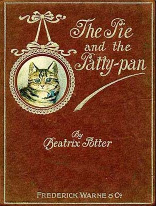
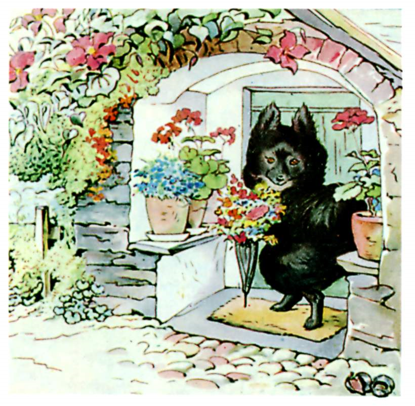
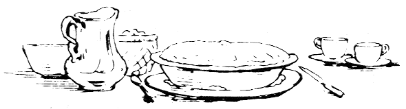
ネコちゃんぬくぬく――まったくだこと
さんぽの子犬――「あらネコちゃんさん
お元気、おくさん？ おくさん、お元気？」
「どうも子犬さん、おたがいさまよ！」
さんぽの子犬――「あらネコちゃんさん
お元気、おくさん？ おくさん、お元気？」
「どうも子犬さん、おたがいさまよ！」
古い歌より
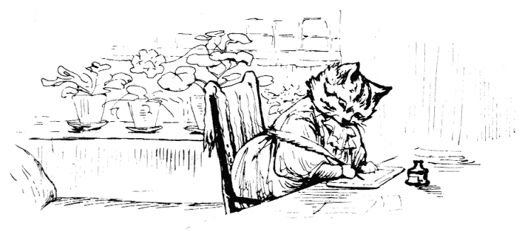
むかしむかし あるところに リービという ネコちゃんが おりました。 ある日、 ダッチェスという 子犬を お茶に おまねきすることに。
リービの お手紙は こうです。「ごつごうの よいときに おこしください。 とってもとっても すてきなものを 手に入れまして。 なので 白地で ふちどりが もも色の パイざらで つつみやきに するつもりです。 きっと はじめて あじわう おいしさですよ！ ひとりで ぺろり たいらげること まちがいなし。 わたしは マフィンで かまいません。」と リービは 書き書き。
このお手紙を よんだ ダッチェスは おへんじ したためます ――「では よろこんで ４時１５分に うかがいます。 ところで ふしぎなことも あるものですね。 わたくしも こちらで ゆうげはと おまねきに うかがおうと していたところで。 たいそう びみなものが ございまして。
それでは お時間どおりに まいります。」と 書いてから ダッチェスは おわりに こう つけくわえます。「ただ ネズミの パイは ちょっと ……」
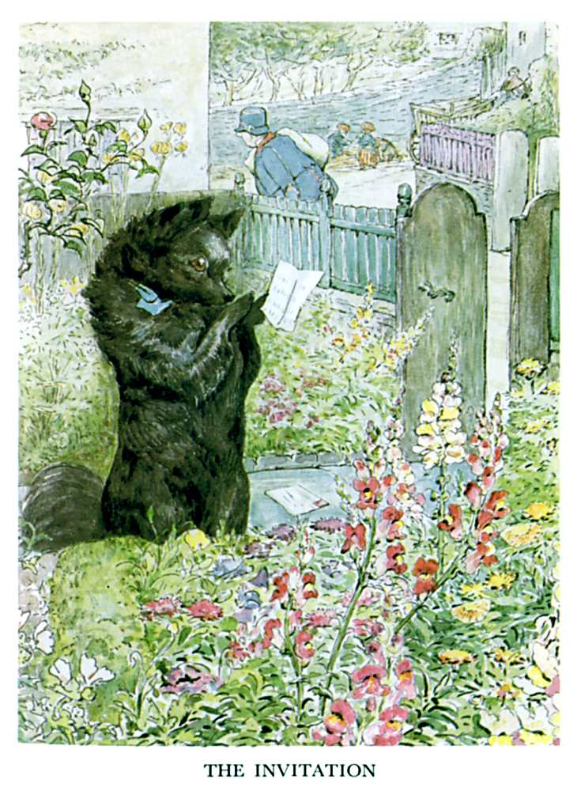
とはいえ あとで ぶしつけだなと 思いなおして、〈た〉だけ のこして あとは けし、〈たのしみに しております〉に 書きかえました。 そして お手紙を ゆうびんやさんに わたします。
それでも リービの パイのことが たいへん 気がかりなので、 なんども くりかえし リービの お手紙を よみかえしました。
「きっと ネズミパイですわ、 どういたしましょう！」と ダッチェスは ひとりごと ――「むり、 ネズミパイを 口にするなんて むりですの。 でも お茶会ですもの、 口にしなきゃ しつれいですわ。 こっちで 子牛と ブタももの パイを 作るところでしたのに。 白地に ふちどりが もも色の パイざら！ そうですわ、 うちにも ございます、 リービの おさらと おんなじものが。 だって どちらも ぐいぐいタビサのところで 買ったんですもの。」
ダッチェスは たべものおきばに 入りこみ、 たなから パイを おろして まじまじ。
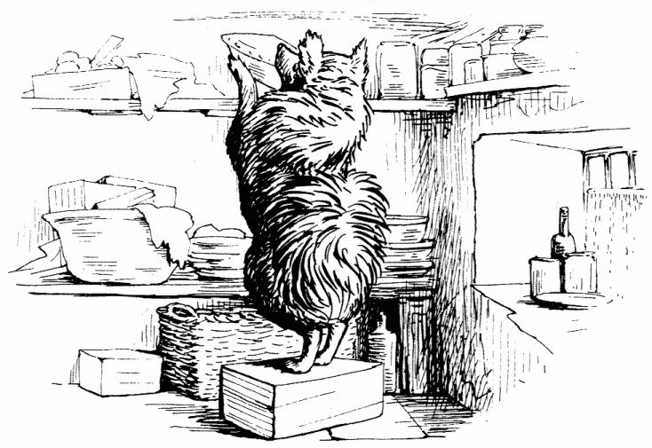
「あとは オーヴンに 入れるだけ。 うっとりするほどの パイきじ。 きじが かたくずれしないよう、 ちっちゃな かなものの やきがたを なかに 入れてございますから、 まんなかに フォークで あなを あけて ゆげが にげるように してありますの ―― んもう、 できれば こっちを 口にしとう ございますわ、 ネズミパイじゃなくって！」
なやみに なやむ ダッチェスは また リービの お手紙を よみます ――
「白地に ふちどりが もも色の パイざら ―― ひとりで ぺろり。 〈ひとりで〉って わたくしのこと ―― となると ご自分は お召し上がりにならないってこと？ 白地に ふちどりが もも色の パイざら！ リービは マフィンの 買い出しに お行きになるはず …… あっ、 思いつきましたわ！ そうですの、 リービが おるすのときに かけ足で リービの オーヴンへ このパイを 入れればよろしいのよ！」
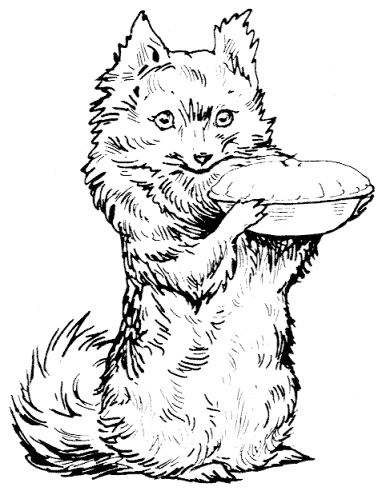
ダッチェスは じぶんが さえてると おおはしゃぎ！
そのころ リービは ダッチェスの おへんじを うけとり、 その子犬さんが おこしになると 知るや すぐさま ―― パイを オーヴンに ひょいと 入れます。 ふたつ たてに つまれた オーヴンには、 ほかにも つまみや とってが あれこれ ありましたが、 ただの かざりで あけるためのものでは ありません。 リービが パイを 入れたのは 下のオーヴンで、 とびらが かたいのでした。
「上のオーヴンは 火が つよすぎるのよね。」と リービは ひとりごと。「ネズミの ひき肉と ベーコンの パイ、 とろけるように やわらかく 肉じる たっぷり。 こぼねも みいんな とってある。 だって この前の お茶会で ダッチェス、 魚の こぼねで のどを つまらせそうに なったんだもの。 食べるのが ちょっと 早いのよ ―― まあ 一口も 大きめだし。 でも そだちのいい おしとやかな 子犬よね。 いとこの ぐいぐいタビサに くらべれば どこまでも上の おきゃくさまだわね。」
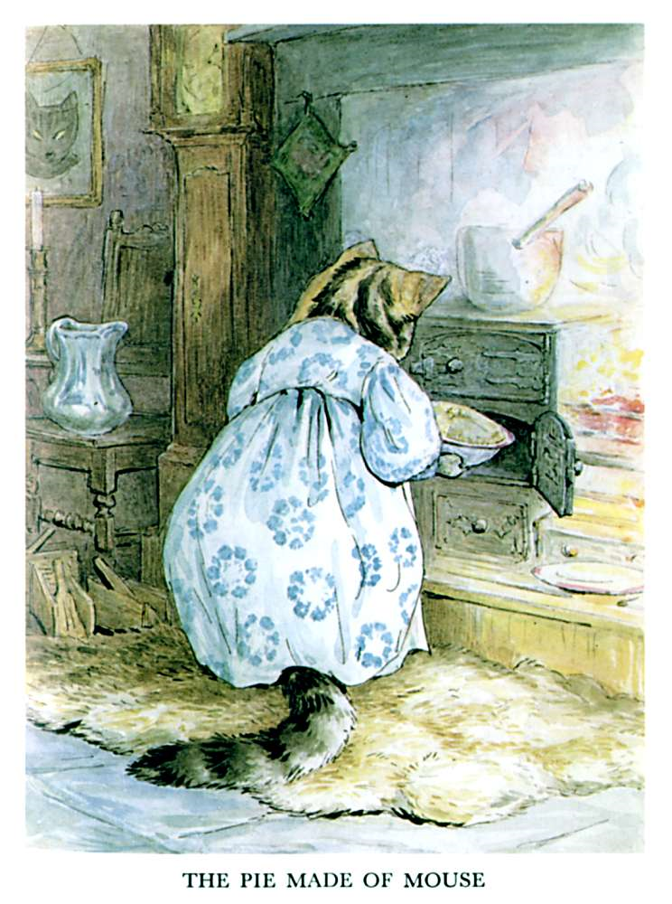
リービは 石炭を つんで、 だんろのそこを きれいに。 それから バケツを もって 外の井戸まで 出て、 やかんに 入れる 水を くみます。
つぎに とりくむのは そのへやの おととのえ。 というのも この台所は いまも かねていたのです。 げんかん口で しきものを ひとつひとつ ぱたぱたしたあと、 きっちりと しきなおしまして、 だんろ前に しくのは ウサギのけがわ。 だんろ上の 時計や おきものの ほこりを はらい、 テーブルや いすも みがいたり こすったり。
つづいて あらいたての まっ白な テーブルクロスを ひろげ、 とっておきの せとものの ティーセットの したく、 だんろそばの つり戸だなから とりだします。 ティーカップには 白に ピンクのバラが あしらってあり、 とりざらは 白地に 青。
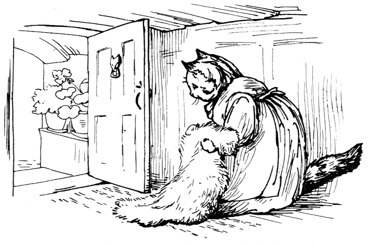
テーブルを ととのえた リービは、 水さしと とりざらを 手に、 野原を くだって まきばへ、 ミルクと バターを とってくるのです。
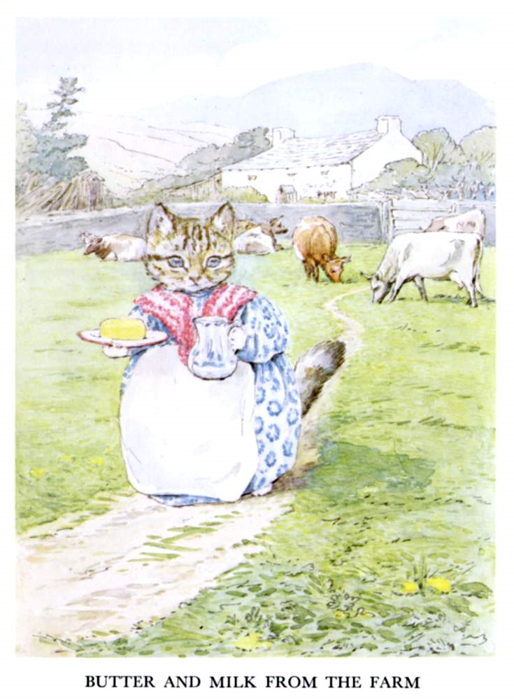
もどってきたときに 下のオーヴンを のぞくと、 パイの ぐあいも いいかんじ。
かたかけと よそ行きの ぼうしを みにつけ、 リービは かごを 手に また おでかけ、 村のお店で お茶っ葉 ひとつつみと 角ざとうを ５００グラム、 あと マーマレードを ひとびん 買うのです。
ちょうど おなじころ ダッチェスも おうちを 出ました。 ふたりの おうちは 村の はしと はしに あります。
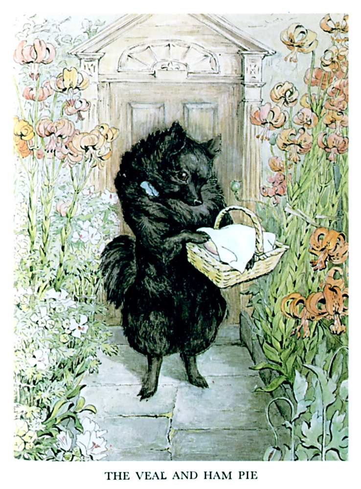
リービが 道すがら 出会った ダッチェスは、 ぬのを かぶせた かごを 下げていました。 おたがいに おじぎだけして 口は かわしません。 あとで お茶会が ありますからね。
角を まがって 見えなくなると、 ダッチェスは すぐさま ―― ひたすらに かけ足！ リービの おうちへ いちもくさん！
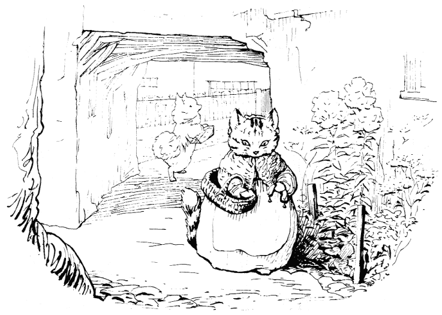
店に 入った リービは いるものを 買って、 いとこの ぐいぐいタビサと たのしい せけん話を してから 外へ 出ます。
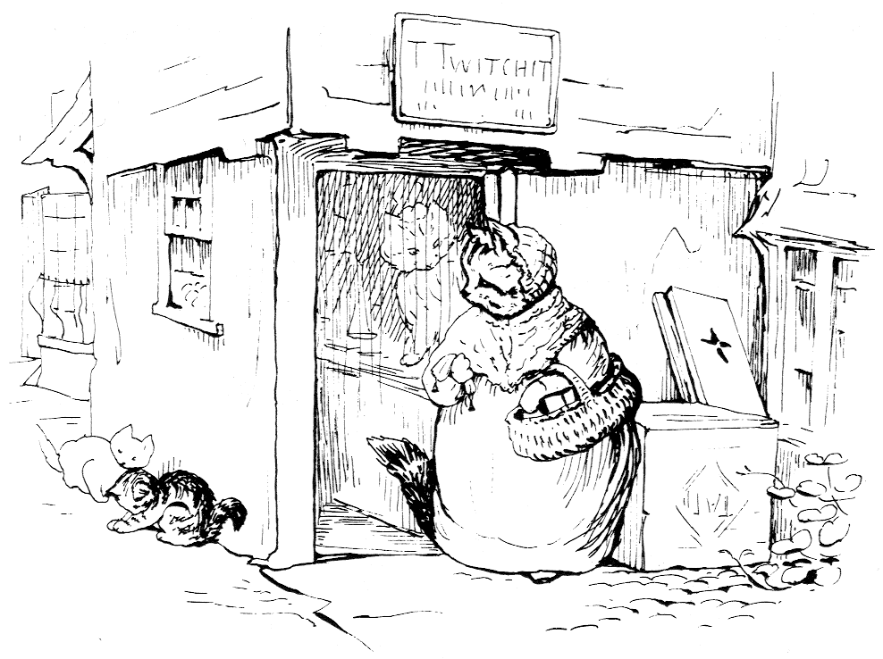
いとこの タビサは おしゃべりのあとに 本音が 出まして ――
「子犬だなんて！ まるで ソーリー村には ネコが いないみたいに！ 午後のお茶に パイですって？ けっこうですこと！」と ぐいぐいタビサ。
リービは ぱんやきティモシーのところに よって マフィンを 買いました。 そうして おうちに かえります。
すると なにやら うら口から がさごそという もの音が。 ちょうど おもてから うちに 入ったときでした。
「パイにしては へんな音ね。 スプーンは まだ しまってあるし、 だとしたら。」と つぶやく リービでしたが、
そこには だれも おりません。 てこずりながらも 下のオーヴンの とびらを あけて、 パイの むきを ととのえます。 やきネズミの いい かおりが してきました！
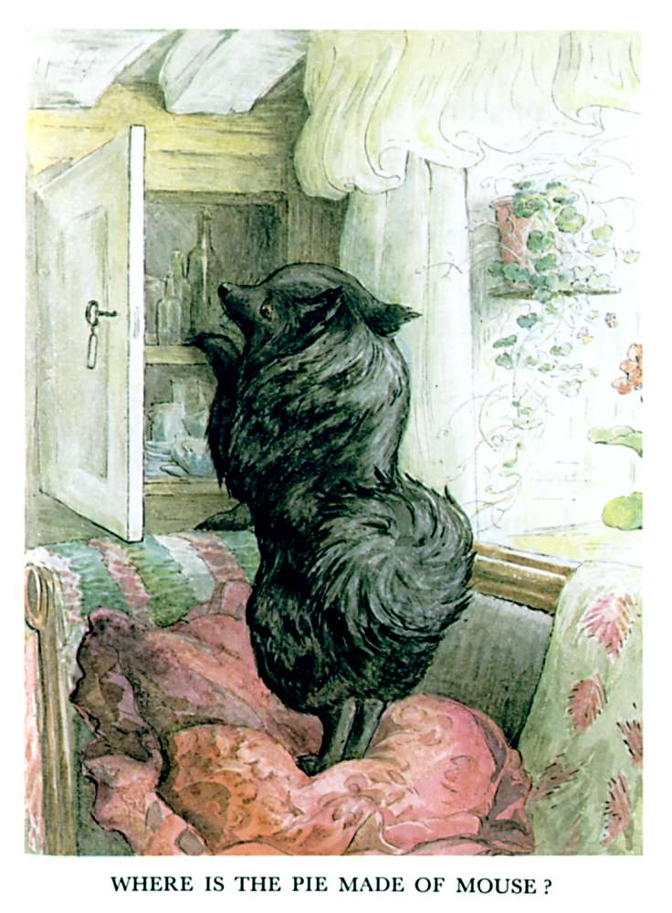
そのときには もう ダッチェスが うら口から しのび出たあと。
「けったいなことですわ、 入れかわるはずの リービの パイが オーヴンに ございませんの！ どこにも 見あたらないなんて。 いえじゅうを おさがししたのに。 こっちの パイは ほどよく あたたまった 上のオーヴンに お入れしました。 ほかの とっては まわりませんし、 きっと みんな 見た目だけのものですのね。」と ダッチェス。「それにしても ネズミパイを おかたづけしとうございましたのに！ どこへ やったのか さっぱり。 この音は リービの おかえりね、 いそいで うらから 出ないと！」
おうちへ もどった ダッチェスは うつくしい 黒の 毛なみに くしを かけます。 それから リービへの 手みやげに にわの お花から 花たばを こしらえました。 あれこれするうち やがて 時計が ４ど なります。
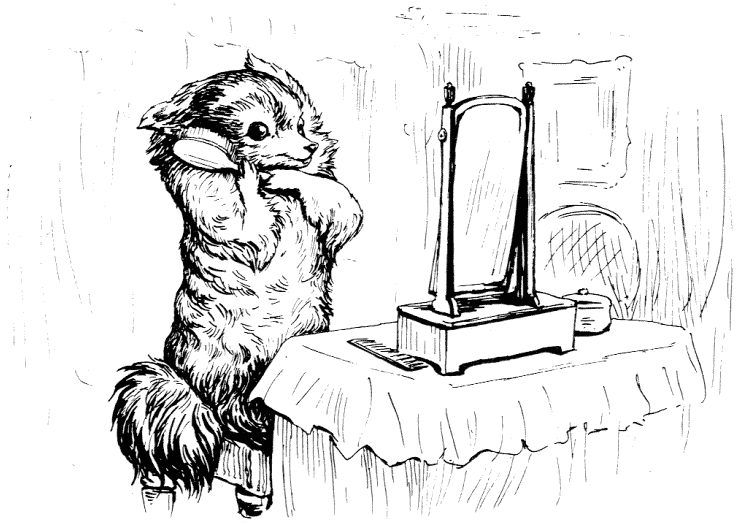
リービは ―― さぐりに さぐって 戸だなにも たべものおきばにも だれひとり かくれていないと なっとくしたあと ―― 上に あがって おきがえしました。
お茶会用の ふじ色の きぬの ワンピース、 それから ししゅう入りの モスリンの エプロンに 前かけを みにつけまして。
リービは つぶやきます。「あらあら？ あの引き出し、 あけっぱなしに してないはずよ。 だれかが わたしの なべつかみ つけようとしてたってこと？」
下に もどって、 お茶を 入れた ティーポットを オーヴンの上に おきます。 もう１ど 下のオーヴンを のぞくと、 パイは すてきな きつね色で、 ほかほか ゆげが 出ていました。
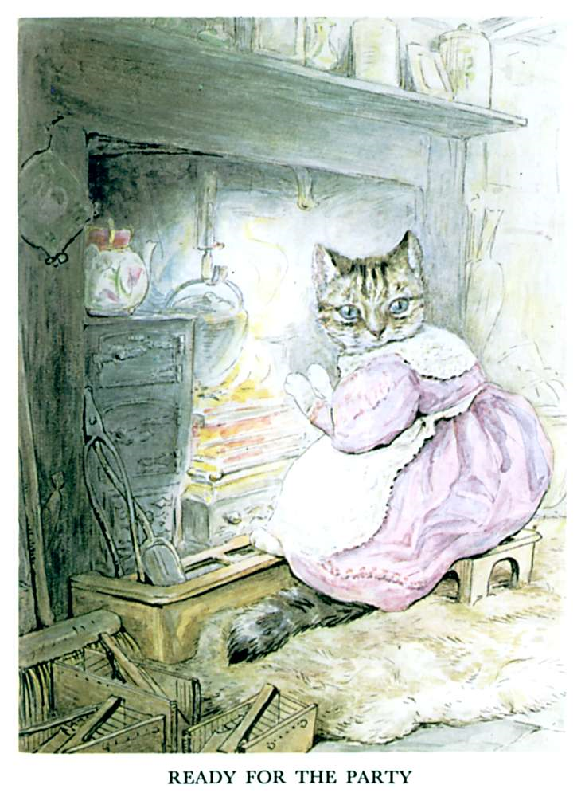
だんろ前に こしを おろして、 子犬を まつ リービ。「下のオーヴンに して よかったわ。 上のは きっと あつすぎどころじゃないわね。 あら、 戸だなの 戸が なぜか あいてる。 まさか ほんとに だれかが このうちに？」
４時きっかり、 ダッチェスは お茶会へと 足を むけます。 村を びゅーんと つっきったので 早すぎて、 リービの おうちへ つづく こみちで ちょっとばかり 時間を つぶすはめに。
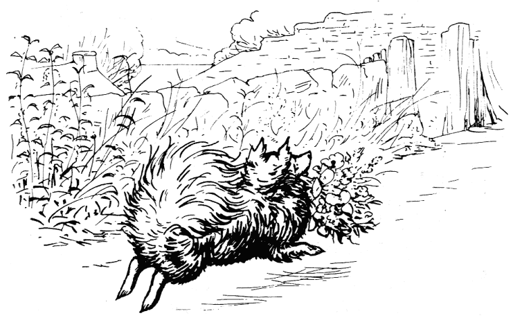
「ええと、 もう リービは こっちのパイを オーヴンから おとりだしになってるかしら。」と ダッチェス。「にしても、 のこりの ネズミパイは いったい どうおなりなんでしょう。」
かっきり４時１５分、 たいそう おしとやかに とんとんと たたかれる ドアの音。「リブストンの おくさまは ございたく？」と げんかんにて ダッチェスは おたずねします。
「どうぞ！ こんにちは、 ダッチェスさん。」と リービは 声を はりました。「お元気そうで。」
「それはもう、 おかげさまで。 あなたは どうですの、 リービさん。」と ダッチェス。「おみやげに お花を もってきましたの。 まあ おいしそうな パイの におい！」
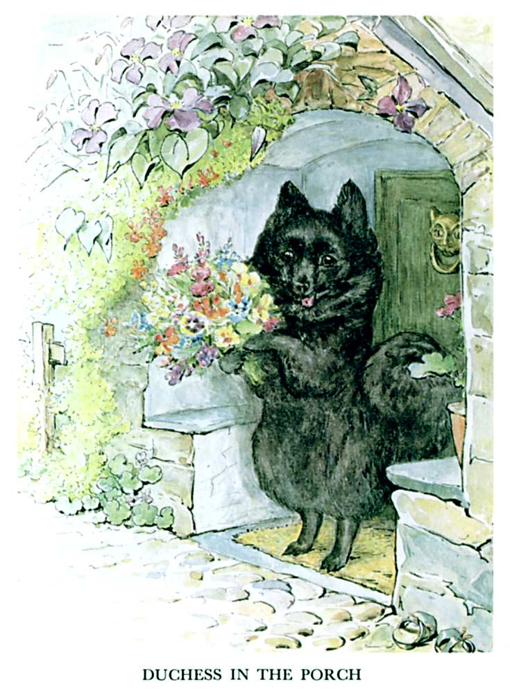
「う〜ん、 すてきな お花！ そうなのよ、 ネズミと ベーコンのね！」
「食べものの 話は それくらいにして、」と ダッチェス。「すてきな 白の テーブルクロス！ …… やきかげんは もう よろしいの？ まだ オーヴンのなか？」
「たぶん あと５分ってとこね。」と リービ。「もう ほんのちょっとだけ。 お茶 入れますわ、 まつあいだ。 おさとうは いります？ ダッチェスさん。」
「ええ おねがい！ リービさん あと、 ひとつ はなさきに のせても よろしい？」
「いいですとも、 ダッチェスさん。 なんて おみごとな ちんちん！ まあ あいらしい かわいらしい！」
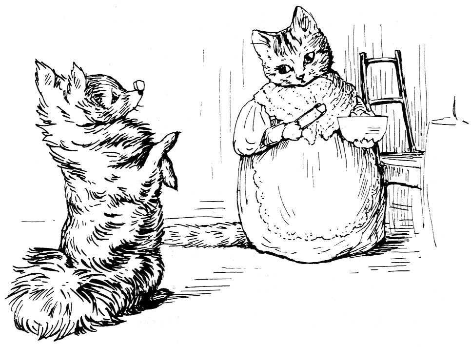
ダッチェスは 自分の はなさきに 角ざとうを のせ、 ちんちんしながら くんくん。
「あのパイの かぐわしいこと！ 大好きなの 子牛と ブタ ―― じゃなくて その、 ネズミと ベーコンね。」
そこで うろたえて さとうを おっことし、 ティーテーブルの 下へ さぐりいるはめに なったので、 リービが パイを とりだすさい どちらの オーヴンを あけたか、 見のがしてしまう ダッチェス。
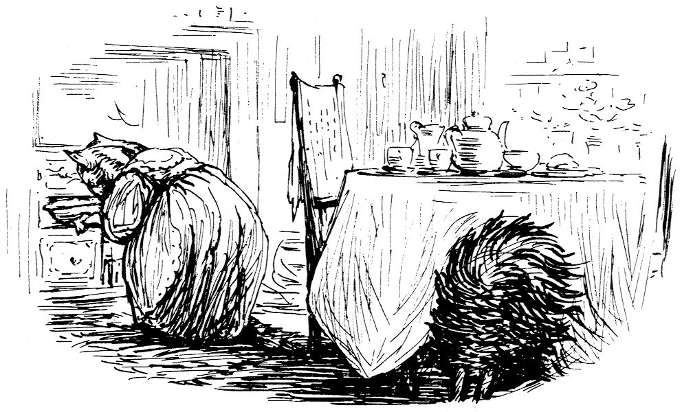
リービは パイを テーブルに おきました。 とっても そそる においが します。
テーブルクロスの 下から さとうを ほおばりながら 出てきた ダッチェスは そのまま いすの上で ちんちんしました。
「とりあえず パイを 切りわけてあげますね。 わたしは マフィンに マーマレードつけて 食べるつもりですから。」と リービ。
「そんなに マフィンのほうが お好き？ なかに やきがたが！」
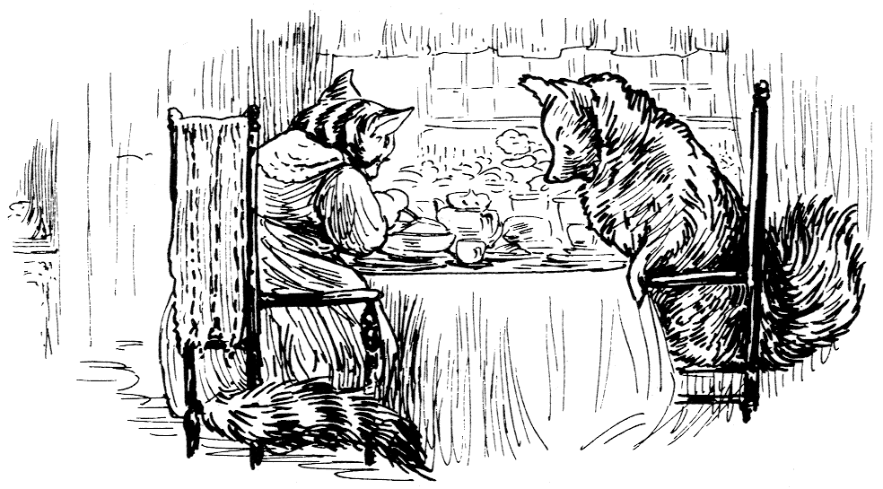
「なんですって？」と リービ。
「な、 なかみ、 これ マーマレード？」と あわてて いいなおす ダッチェス。
はたして パイは 味わいぶかく、 マフィンは ふわふわ ほかほか。 どんどん なくなります、 パイは ことさらに！
「きっと。」――（と ダッチェスは かんがえごと。）――「きっと、 自分で とりわけたほうが よろしゅうございましたわ。 ですけど リービ、 お切りになるさい なんにも お気づきにならなかったみたいね。 あら こんな こまぎれの ぐのなかに 入れたんでしたっけ！ こまかく ミンチにした おぼえは ないんですけど。 それに うちのより 火の つよい オーヴンですのね。」
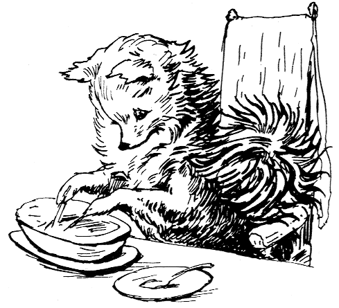
「やっぱり ダッチェスは 食べるの 早いわね！」と ダッチェスは かんがえごとを しながら、 ５つめの マフィンに バターを ぬりぬり。
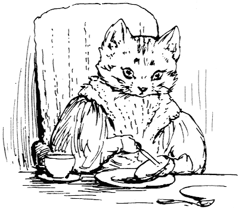
パイざらの なかみは どんどん なくなっていきます！ ダッチェスは もう ４もりめが おわって、 今は スプーンで なかを こねかえしていました。
「ベーコン もうちょっと いります？」と リービ。
「おかまいなく、 リービさん。 ただね やきがた いずこかなって。」
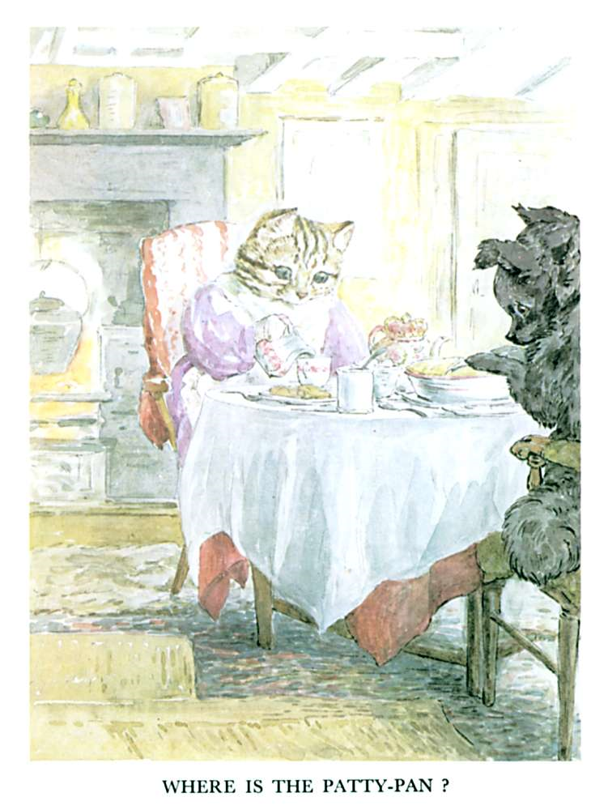
「やきがた？ なんのこと？」
「パイきじの かたくずれを ふせぐ やきがたが。」と ダッチェスは 黒い 毛なみに うもれた かおを まっかにします。
「まあ そんなの 入れてませんよ、 ダッチェスさん。」と リービ。「ネズミパイには いらないと 思いますけど。」
ダッチェスは スプーンを こねくりまわして ――「見あたりませんの！」と そわそわ。
「やきがたなんて ないですって。」と とまどう リービ。
「ございますの、 リービさん。 いったい いずこへ おきえに？」と ダッチェス。
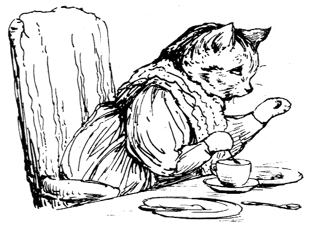
「ぜったい そんなもの ありませんよ、 ダッチェスさん。 プディングや パイには かなものは つかわないことに してるんです。 とっても あぶないでしょ ――（ほら まるのみしちゃったときとか！）」と さいごのところを ひそひそと。
たいそう びくついた ごようすの ダッチェス、 パイのなかを かきまわすばかり。
「うちの 大おばの スクィンティーナ（いとこの ぐいぐいタビサの おばあさんですけど）―― クリスマス・プディングに 入れる ゆびぬきのせいで おっちんでね、 だから わたし、 けっして プディングや パイに かなものなんか 入れないんです。」
かおを ぎょっとさせる ダッチェス、 パイざらを かたむけます。
「やきがたは ４つしか もってませんけど、 みんな 戸だなのなかですし。」
ひぃ、 と 声を あげる ダッチェス。
「死んじゃいますの！ 死にますの！ やきがたを まるのみですの！ ひゃあ リービさん ぐるしいですの！」
「気のせいですよ、 ダッチェスさん。 やきがたなんて ないんです。」
くぅんと もだえながら ダッチェスは みを よじらせます。
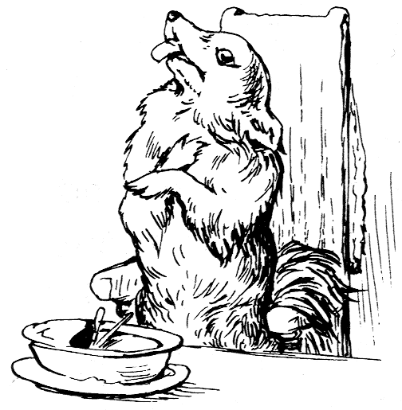
「ひっ ぞくぞくしますの。 やきがたを まるのみ！」
「このパイには ないですって。」と いいきる リービ。
「ございましたの、 リービさん。 きっと わたくし それを！」
「手を かしますから よこに なります？ どこの ぐあいが わるいんですか？」
「ひゃ もう からだじゅうが ぐるしゅう、 ございますの。 のみこんだ やきがた、 大きゅうて かなもので まわりが ひだひだで とがってまずの！」
「おいしゃさま、 よんできましょうか？ とりあえず スプーン かたづけますわ！」
「ひぇ、 ええ ええ！ むらっけ先生 おつれになって、 リービさん。 あのかたは マグパイ、 カササギですもの きっと おわかりになるはずですの。」
リービは だんろ前の ソファに ダッチェスを おちつけると、 外へ 出て 先生を さがしに 村へと いそぎます。
いたのは かなものづくりの こやでした。
ゆうびんきょくで 手に入れた インクつぼに せっせと さびた くぎを ひたしていまして。
「でたでた！ は！ はっ！」と くびを かしげていました。
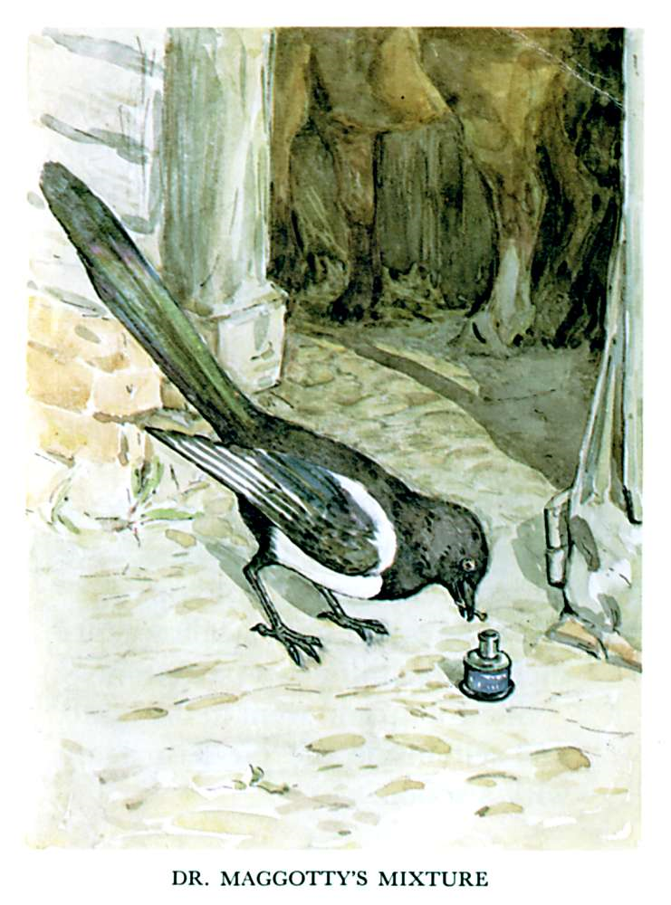
リービは わけを はなします、 おきゃくさんが やきがたを のみこんだと。 すると、
「らめらめ？ は！ はっ！」と こたえて いそいそ ついてきます。
ひょいひょい すすむものですから、 リービまで はしるはめに なりまして。 めだつったら ありません。 リービが 先生 つれていたこと 村じゅうに 知れわたったでしょうね。
「それ見たこと、 食べすぎたのよ！」と いとこの ぐいぐいタビサ。
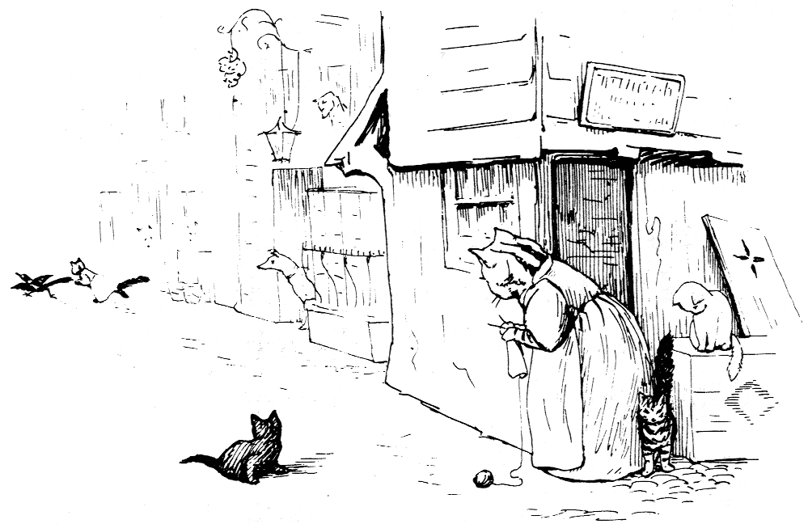
ところが リービが 先生を さがしているあいだに ―― みょうなことが ダッチェスに おこったのです。 ひとり のこされて、 こころぼそく ぜえはあ していたのですが、
「まるのみって どうやって？ やきがたみたいな 大きなもの！」
立ち上がって テーブルへと より、 パイざらのなかを また スプーンで さぐります。
「ございませんわ、 やきがた。 なかへ 入れましたのに。 パイを 口にしたのは わたくしだけ、 ですから わたくし のみこんだに ちがいありませんの！」
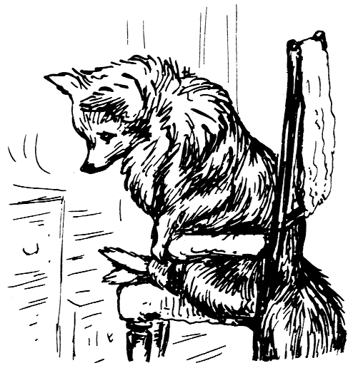
また こしを おろして、 しょげながら だんろを じーっ。 火は ぱちぱち ゆらゆら、 さらに なにかが じゅ、 じゅうぅぅぅ！
ダッチェスは びくっ！ 上のオーヴンの とびらを あけると、 もくもくと 出てきたのは こうばしい 子牛と ブタももの かおり、 みごと きつね色の パイが のっかっていて ―― パイきじの てっぺんに あいた あなから ちいさな かなものの やきがたが ちらり！
ダッチェスは しんこきゅう ――
「なら わたくしが たべていたのは ネズミ！ …… どおりで 気持ちわるいはず …… ですけど ほんとに やきがたを まるのみしてたら もっと ひどいことにだって！」ここで かんがえだす ダッチェス ――「やっかいですわ、 このままでは リービに わけを はなすことに！ ここは こっちのパイを うらにわに おいて ないしょに いたしましょう。 おうちへ かえるさい、 うらに まわって こっそり もちだすんですの。」と うら口の外に おいてから、 また だんろわきに すわりこんで 目を つむりました。 リービが 先生を つれて やってきたときには、 ねいっているようにしか 見えません。
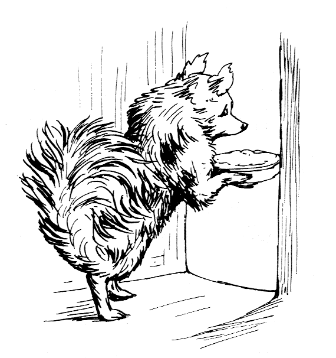
「でたでた、 は、 はっ？」と 先生。
「ぐあいは かなり よくなりましたの。」と ダッチェスは びくっと おきあがります。
「それを きいて ほっとしました！ おくすりを ひとつぶ おもちなんですって！」
「あのですね みゃくを とっていただくだけで、 もう じゅうぶんですの。」と ダッチェスは、 カササギが くちばしに なにか くわえて にじりよってきたので、 あとずさりしまして。
「ただの パンぐすりですから。 とらないと あなた たいへんよ。 ほら、 ミルクを ちょっと ごっくりして、 ダッチェスさん！」
「でたでた？ でたでた？」と 先生の いうかたわら、 せきこんで むせる ダッチェス。
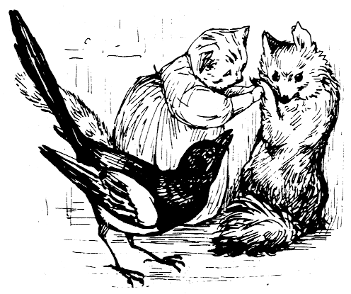
「うるさいわ 先生！」と リービが いきなり おこりだして ――「ほら このジャムつきパン あげますから、 にわに 出てってよ！」
「でたでた、 らめらめ！ はははっ！」と むらっけ先生は 仕事は おわったとばかりに 声を あげて うら口から 外へ。
「気分は もう すっかり よくなってきてますの。」と ダッチェス。「わたくし、 くらくなる前に かえらないと だめですわね？」
「そのほうが いいかもですよ。 すてきな かたかけ かしてあげますから、 あと わたしの かたも おかりなさいな。」
「どうぞ おかまいなく。 すこぶる よくなりましたの。 むらっけ先生の おくすりが ――」
「あらま やきがたを とっぱらったってんなら、 なんて あっぱれな！ 明日の 朝ごはんのあと おやすみできたか おたずねに あがりますよ。」
リービと ダッチェスは ねんごろな おわかれを して、 おいとまする ダッチェス。 かえり道、 たちどまって ふりかえります。 リービは もう なかに 入って 戸じまりしていました。 ダッチェスは さくを すりぬけ、 リービのうちの うらへ まわって、 にわを のぞきこみます。
ブタごやの やねに むらっけ先生と ３わの コクマルガラスが ちょこん。 ３わの カラスが パイきじを もぐもぐ、 カササギが やきがたから 肉じるを じゅるり。
「でたでた、 は、 はっ！」と 声を あげたのは、 ダッチェスの 黒い ちいさな はなさきが 角から のぞいていることに 気づいたからです。
かけ足で さる ダッチェス、 もう ばつが わるくって！
お茶の どうぐを あらおうと、 バケツ １ぱいの 水くみに 出てきた リービが 見つけたのは、 白地で ふちどりが もも色の パイざら、 しかも にわの どまんなかで こなごなに われていました。 やきがたも 水くみポンプの 下に あったのですが、 これは むらっけ先生が 気を きかせて おいていったものです。

リービは たまげて じろじろ ――「こんなのって ある？ ってことは、 ほんとに やきがたが あったの？ …… でも わたしの やきがたは みんな 台所の 戸だなの なかだし。 わたしじゃないって ことは！ …… つぎ お茶会を ひらくときには ―― いとこの ぐいぐいタビサを よびましょ！」
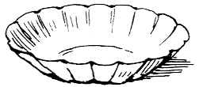
（おしまい）